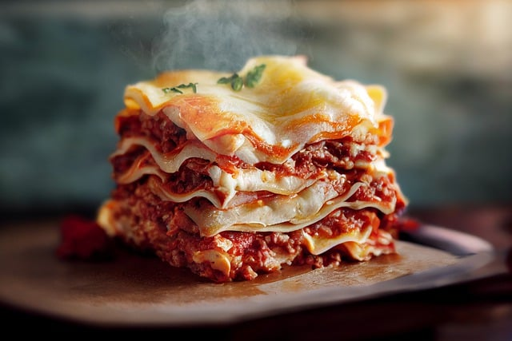

Lasagna Recipe

Description
Lasagna is an all-time favourite dish in many Western households both in
Europe and overseas.
You do not have to be Italian to enjoy preparing, cooking and eating this
lovely dish with your family, loved ones or friends.
Give it a try. You got this!
Ingredients
- Dried sheets of past
- Meat ragú
- Ricotta and mozzarella
- Fresh egg (optional)
- Spinach (optional)
- Bechamel and Parmigiano Reggiano
Steps
-
Begin by preparing the ragù (meat sauce). First, cut the pancetta into
1/4" cubes. Chop the cubes and sauté them in a pan. In another pan, add
3 Tbsp. oil or butter, the celery, carrot, and onion, and cook until
soft. Add the ground beef and cook until well browned, 25-30 minutes.
Add the wine and stir until it evaporates. Add the tomato purée, cover,
and simmer slowly for around two hours, adding broth as needed. When
nearly done, add 1/2 cup milk to cut the acidity of the tomatoes. Season
with salt and pepper to taste.
-
For the lasagna sheets: Bring water to a boil in a large pot and add
salt. Boil and purée the spinach. Mix 2 2/3 cups flour, eggs and spinach
into a compact dough. Roll into thin sheets (1/16") and cut into large
rectangles. Line a tray with clean tea towels. Boil the pasta sheets
until just softened (around 20 seconds) and transfer to the tea towels
to dry.
- Preheat the oven to 325°F.
-
For the béchamel: In a saucepan, heat 1/2 cup butter over low heat, add
1 cup sifted flour, and whisk constantly. Cook this roux until golden,
then add 1 qt. milk, salt, and nutmeg. Remove from heat.
-
Grease a 9"x13" baking dish with butter and top with a layer of the
lasagna sheets, then a layer of sauce, then the béchamel, and top with
spoonful of Parmigiano. Repeat process until the ingredients are
finished. Cover the final layer with béchamel, pats of butter, and bake
for around 30 minutes. When the top is golden, remove and serve.
Recipe by LaCucinaItaliana.com